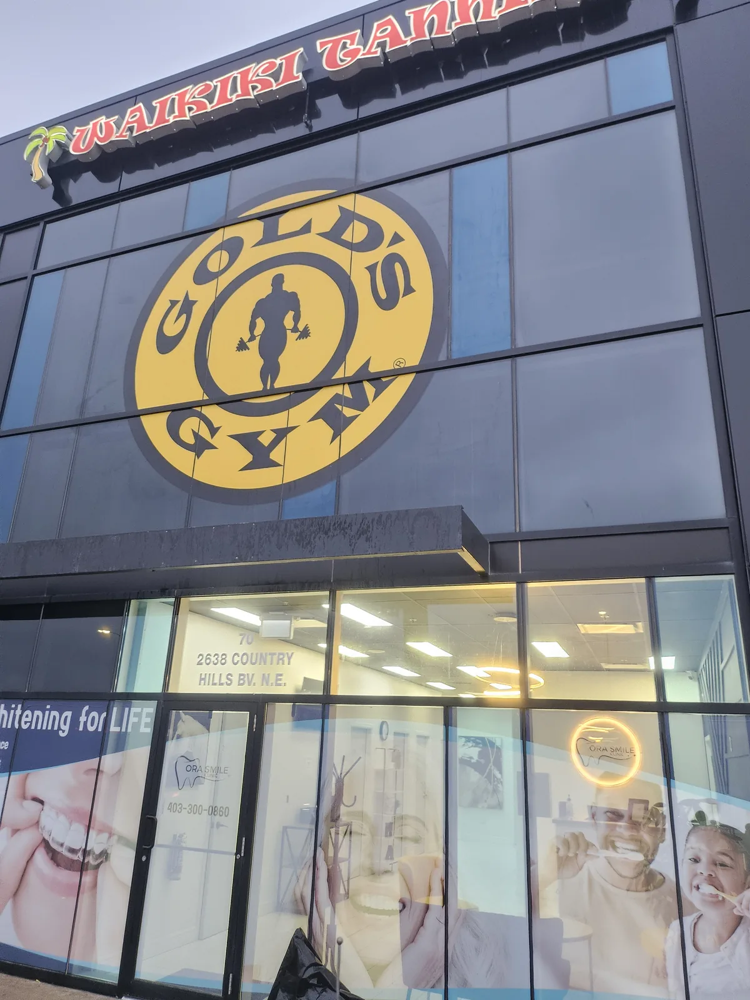

City of Calgary campaign.
Stephen Avenue.
The project
The City of Calgary required a window graphic campaign installed across commercial storefronts on Stephen Avenue as part of the downtown revitalization initiative. The installation covered multiple adjacent storefronts with a cohesive multi-panel graphic system designed to engage pedestrians at street level.
Government and municipal installations come with their own set of requirements — strict specifications, coordination with multiple stakeholders, and graphics that represent the City of Calgary's public communications standards.
The challenge
- Multi-panel installation across multiple storefronts requiring visual continuity
- Street-level public installation on a busy downtown pedestrian corridor
- Coordination with building management and the city's project team
- Graphics covering full window panels with precise placement within frame borders
- Installation required during non-disruptive hours on an active public street
How we executed it
CDN Crew worked within the city project team's schedule and coordinated access with the building management for each storefront. The installation was sequenced to move efficiently along the block while maintaining the visual continuity of the multi-panel graphic across the window grid.
Each panel was checked for alignment against the window borders and against adjacent panels before sign-off. The result is a cohesive street-level graphic that communicates the city's downtown revitalization message clearly to passing pedestrians.
Multi-panel window graphic campaign installed across Stephen Avenue storefronts. The graphics are visible from the street and form a continuous visual narrative across the block — exactly as designed by the City of Calgary's communications team.

Another CDN Crew window graphic installation — Calgary commercial building.
Government and institutional installs
CDN Crew has experience working with municipal, government, and institutional clients who require a higher level of coordination, documentation, and professional conduct on site. We understand that when the City of Calgary's name is on the graphic, the installation reflects on the client — and we behave accordingly.